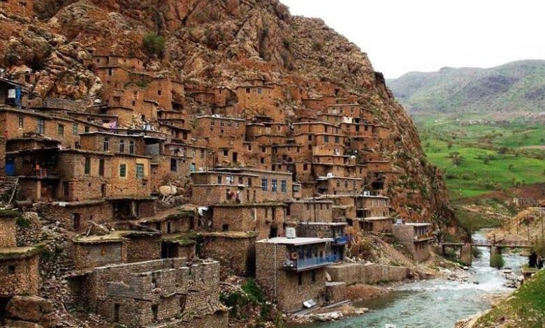
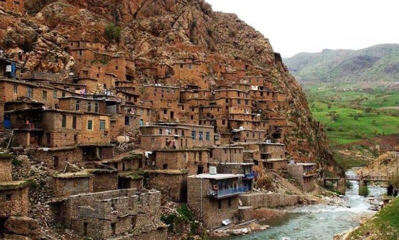
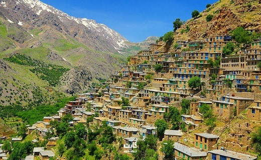
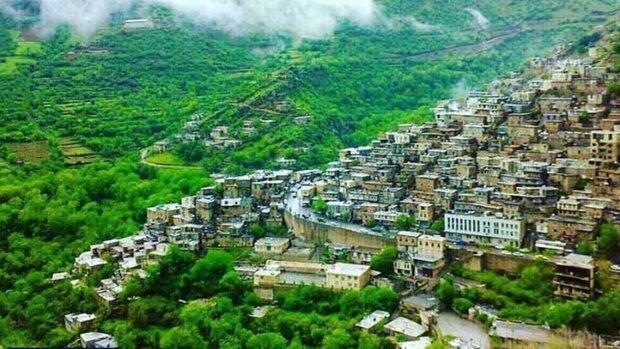
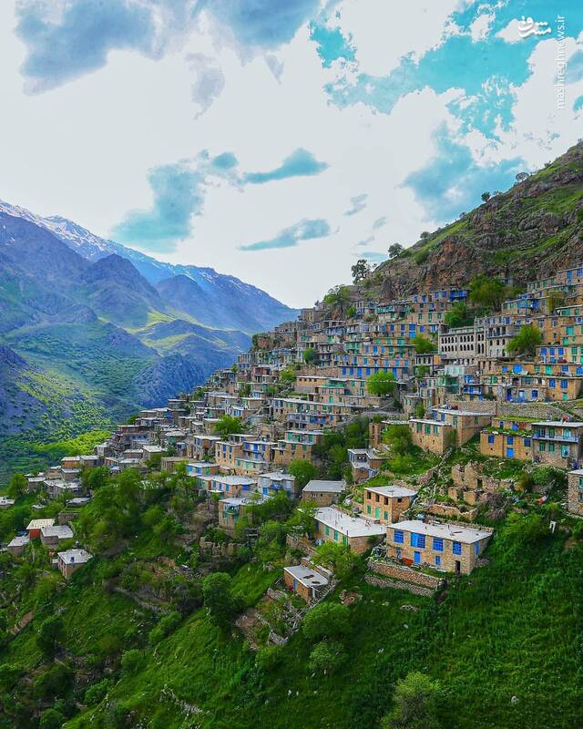
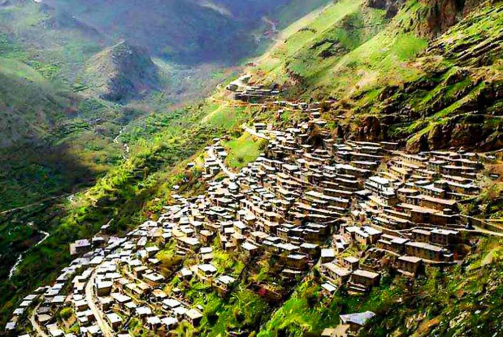
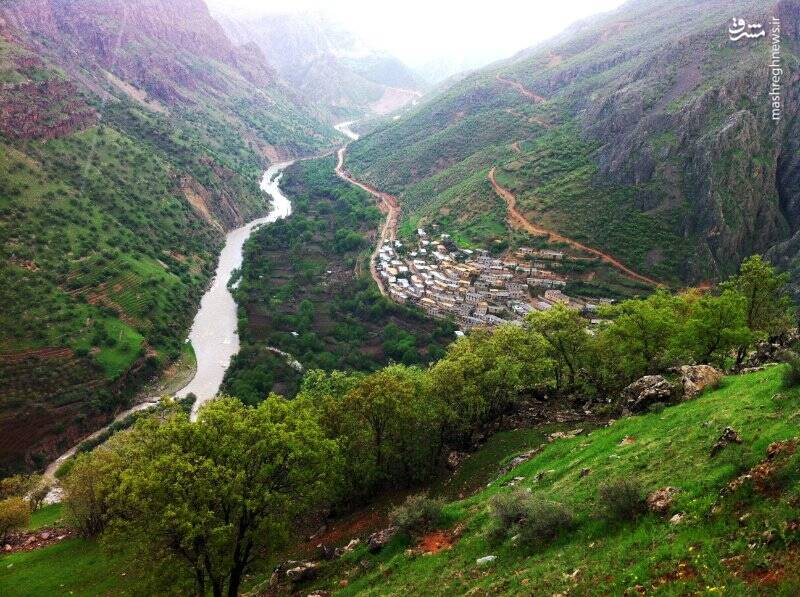

معرفی اورامانات
اورامانات منطقهای کوهستانی است که ساکنان آن به گویش هورامی سخن میگویند. به دلیل معماری پلکانی و طبیعت بکر، در یونسکو ثبت شده است.
منطقهای تاریخی، فرهنگی و طبیعی در ایران و عراق
اورامانات منطقهای کوهستانی است که ساکنان آن به گویش هورامی سخن میگویند. به دلیل معماری پلکانی و طبیعت بکر، در یونسکو ثبت شده است.
قدمت اورامانات به دوران پیش از تاریخ میرسد و آثار تمدنهای آشوریان، مادها و هخامنشیان در این منطقه یافت شده است.
معماری پلکانی اورامانات باعث شده که این منطقه به "هزار ماسوله" مشهور شود. حیاط هر خانه، پشتبام خانهای دیگر است.
این منطقه دارای رودخانههای مهمی همچون سیروان و لیله است. چشمه بل نیز یکی از پرآبترین چشمههای ایران است.
مردم اورامانات دارای فرهنگ غنی، جشنهای محلی و صنایعدستی منحصر به فردی هستند که از گذشته تا کنون حفظ شده است.
اورامانات بیست و ششمین اثر جهانی ایران است که در یونسکو به عنوان "منظر فرهنگی" به ثبت رسیده است.
